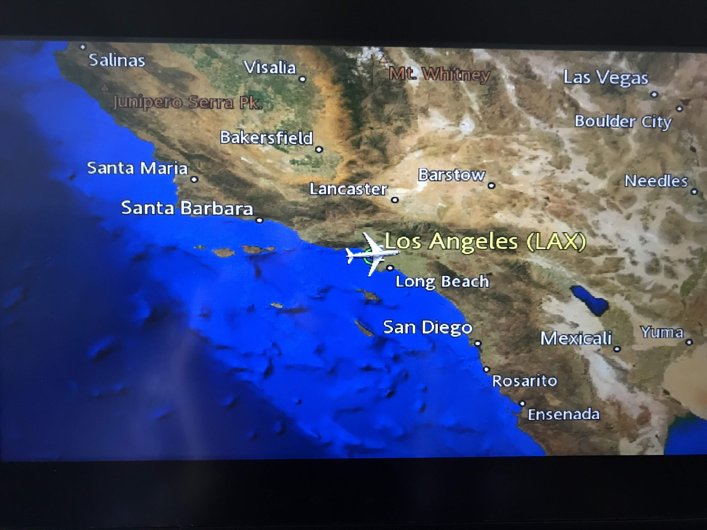
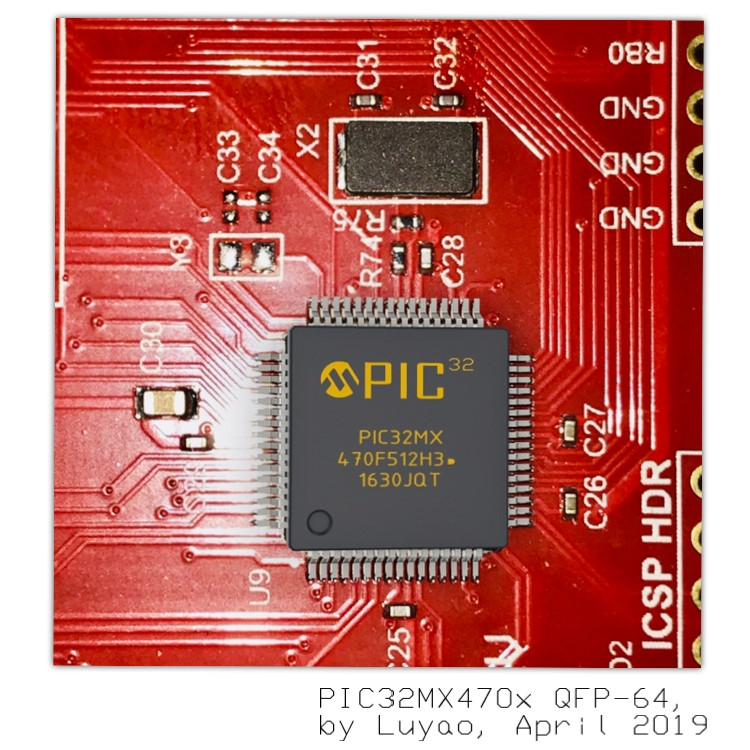
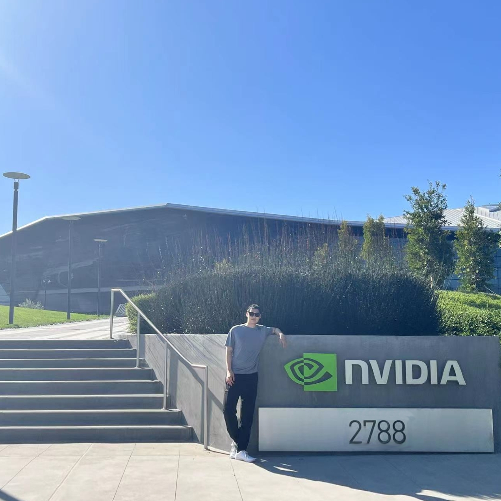
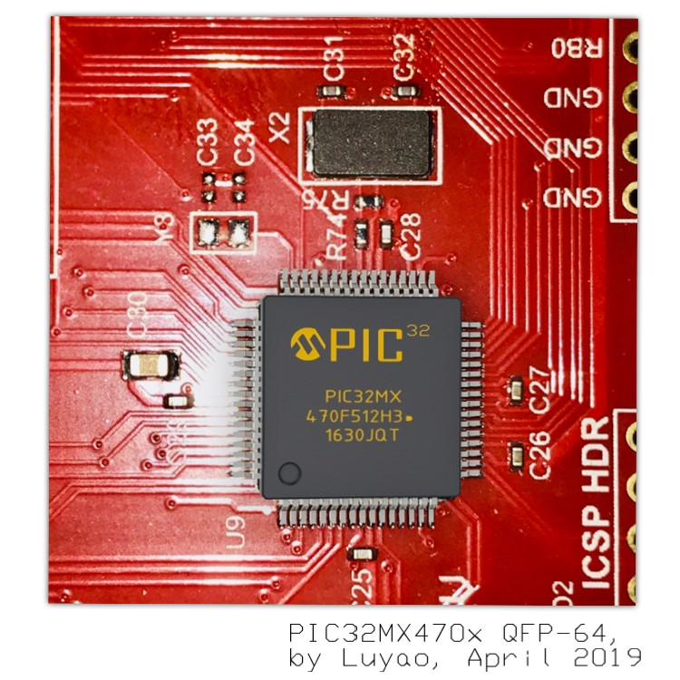
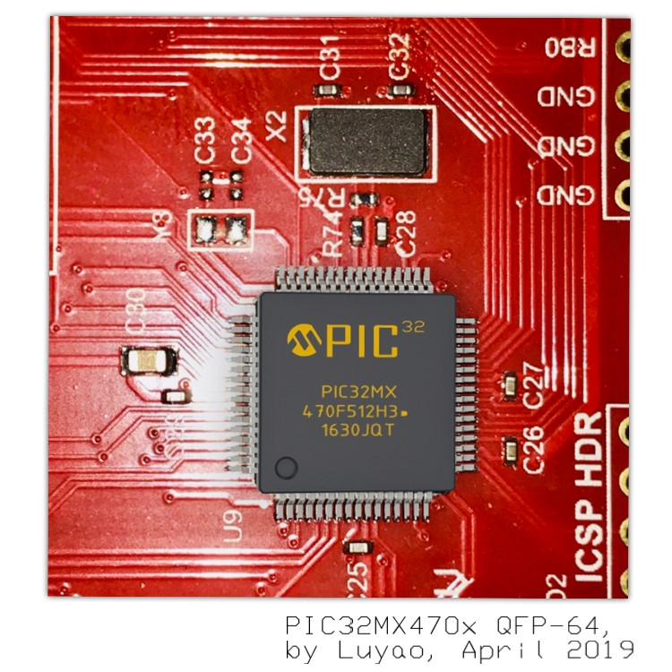

1999, I was born in East China, the city of Hangzhou.
Witnessing the economics' confident rise, the country soon pivoted its development around first-tier cities.
My family had decided to move to the city of Shanghai to seek for better financial opportunities, and more importantly, the education resources for their beloved children.
My story began from here.
Teenage.
I was the "mediocre kid" among the many.
And you kind of had to be the best to get into a good college, then to be successful enough to live a good life. -- Typical Asian view of this kind of outlook yet by and large a true statement in developing countries like where I was from.
December 16th 2013, I got an admission letter from an international school that offered equivalent high school curriculum as those in the United States.
After some thoughtful discussions, my family and I decided that I shall pursue the journey.
That said, I was expected to earn a high school education enough to prepare for a U.S. college, deviating from what a normal student would experience at my age, and would take a path for higher education far away from home.
I was proud that I had been qualified as one of the few students who had done really well in the qualification exam.
High School.
High school was fun.
As the school advocated -- "WHERE EAST MEETS WEST".
Halloweens, Secret Santas, Pep Rally, Talent Show, Academic Debate, Musical Theaters... opened my eyes to the western world.
I truly appreciated such interesting cultural fusion.
I also got to understand myself better. That, I was a true adherent of pragmatism. Now as a hindsight I realized that some signs manifested early that I thought and treat my problems like an engineer.
Interestingly, I remembered once I programmed the auditorium stage lighting console for an entertaining Talent Show. I liked the sole magic power of machine intelligence.
I tried programming micro-processors, Linux, though not sure how to proceed. I thought the technology were "magical".
The many virtues and personalities, jointly encouraged me to become who I am today.
These qualities are Passion, Grittiness, Resilience, Aspiration, and Curiosity.
They carried me on during the most difficult times, and will be precious assets for life.
College.
September 3rd, 2017, I landed in the Los Angeles Airport.
Four years of exciting undergraduate study ahead, my study in the United States had formally began.

The electrical engineering curriculum at UC Santa Barbara was composed of the lower-division and upper-dicision course sets.
The lower-division courses were fundamental, introdutory courses to prepare the student ready for advanced upper-division engineering courses with proper theory and mathematical foundations.
First year I took Calculus, Differential Equations, Vector Calculus, Problem Solving with C++, and many others.
Somophore year, I enjoyed and probably also hated the "10 Series", which was a whole year of continuous series for analog and digital circuits systems designs and analysis.
Out of curiosity and with many C programming experiences in the past, I naturally enrolled in other more advanced C++ courses on Data Structures and Algorithms, Object-Oriented Programmings and Software Architectures Courses.
Countless times -- either it was a deeply hiding bug existed in my program or an equation turned out to be broken in the homework. I still recall the many nights in which I stumbled on those hard problems I had faced.
Transformation.
Having vaguely realized that my intrinstic curiosity lying in the digital hardware and lower-level software domain, I changed my major from Electrical Engineering to Computer Engineering.
Well, the two majors had ~70% curriculum overlap except that I got to allocate more time to software side of the spectrum, and less messy semiconductor Physics.
In Junior and Senior year my curriculum had focused on Embedded Systems and Computer Architecture, which had interestingly became the solid concentration of my master study later.
Some more courses taken included Machine Learning, Computer Graphics, Contex Optimizaton, Signal Analysis and a tasteful selection of General Educations Courses.
What I had realized after taking these courses was that technality and a college degree were merely the fundamentals of fundamentals.
During the course training the most important qualities I had picked up was the ability to quickly ramp up onto an unsolved problem, produce an effective strategy incrementally, and gain confidence from tackling hard problems.
When I started to realize I would no longer be afraid of certain problems, it meant I had gone through such cycles so many times and had already gained enough confidence in such area.

Where did I see myself in the forthcoming future?
After trying multiple research assistance positions in labs I had clearly shown poor enthusiasm towards becoming a researcher.
Well, I did loved reading textbooks and papers though, given if they were closely related to the application field. The semiconductor industry had always been a divine place that I looked up to.
I interned at multiple companies and tried various things in different roles. And sure I was motivated!
Profession.
In 2021 I moved to the city of Pittsburgh, a city on the East Coast of the United States.
Carnegie Mellon University was deemed one of the most respected institutions in the fields of computers-related studies, in the world.
The graduate-level topics in embedded domain were fascinating, itself was an entire spectrum and I gain much more momentum towards what I wished to do, I was accelerated.
This is the time I found myself being contacted by very thrilling opportunities across quite well known organizations, and my career shall bagin from here.

Joyfully, I would be graduating with a Master of Science degree in Electrical and Computer Engineering, which would mark the end of the entire college life.


 
